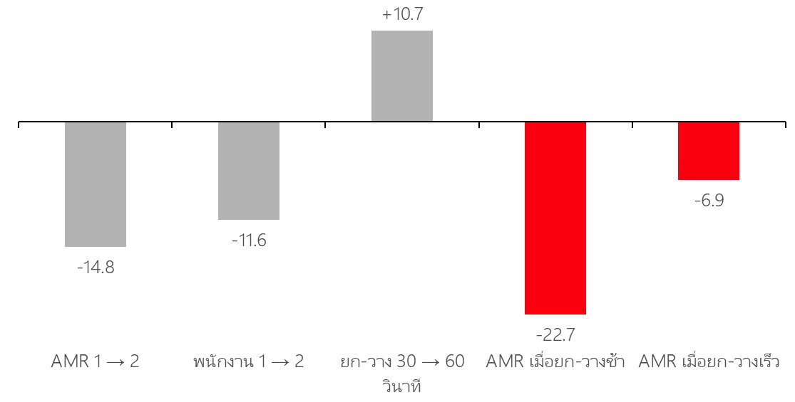
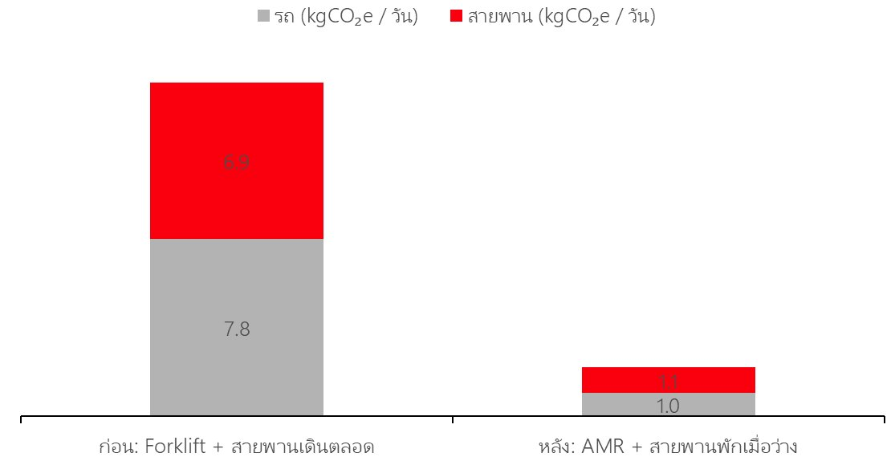

3.1 แบบจำลอง ข้อมูล และ AI ช่วยตัดสินใจ
3. วิเคราะห์ข้อมูลจากแบบจำลองด้วย AI · ภาคทฤษฎี
วัตถุประสงค์การเรียนรู้
- อธิบายระดับของแบบจำลองเสมือนจริง และขั้นตอนรวบรวม–เตรียมข้อมูลจากระบบคลังสินค้าได้
- อ่านผลการทดลองหลายรอบ (ช่วงความเชื่อมั่น) และการทดลองหลายปัจจัย (DOE) ได้
- เลือกเครื่องมือหาค่าที่เหมาะสมและ AI ให้ตรงกับปัญหา รวมทั้งคำนวณคาร์บอนจากพลังงานได้
เริ่มจากตัวเลข: AI แม่น 3 % แต่พลาด 35 %
ให้ Neural Network เรียนจากผลการจำลอง 48 ชุด แล้วทำนายชุดที่ไม่เคยเห็น ต้นทุนต่อวันทายแม่นมาก คลาดไม่เกิน 3 % แต่ lead time คลาดถึง 35 % เพราะเวลารอขึ้นกับคิว ซึ่งเปลี่ยนแบบไม่เป็นเส้นตรง — AI เก่งบางเรื่อง พลาดบางเรื่อง เราต้องรู้ว่าเครื่องมือแต่ละตัวทำอะไรได้ และต้องระวังอะไร
1. แบบจำลองกับข้อมูล
แบบจำลองเสมือนจริงในการบริหารคลัง: 3 ระดับ
| ระดับ | ลักษณะ |
|---|---|
| แบบจำลอง (Simulation Model) | สร้างจากข้อมูลที่เก็บมา ใช้ทดลอง "ถ้า... จะเป็นอย่างไร" — หลักสูตรนี้อยู่ระดับนี้ |
| Digital Shadow | รับข้อมูลจริงจากหน้างานอัตโนมัติ โมเดลสะท้อนสถานะปัจจุบัน ข้อมูลไหลทางเดียว: จริง → โมเดล |
| Digital Twin | ข้อมูลไหลสองทาง โมเดลทดลองแล้วส่งคำสั่งกลับไปหน้างาน เช่น ปรับแผนรถอัตโนมัติทุกเช้า |
ทุกระดับเริ่มจากแบบจำลองที่ดีและข้อมูลที่สะอาดก่อน
รวบรวมและเตรียมข้อมูลจากระบบคลัง
- 1แหล่งข้อมูล — WMS · ERP · Excel · เครื่องสแกน · เซนเซอร์ (IoT)
- 2รวบรวม — ดึงช่วงเวลาที่ต้องการ เช่น ออเดอร์ 5 วัน
- 3ทำความสะอาด — ตัดรายการยกเลิก รหัสผิด แถวซ้ำ ค่าว่าง
- 4สรุป — รวมเป็นยอดต่อวัน ต่อรหัส ต่อชั่วโมง
- 5ใช้ในแบบจำลอง / AI — นำเข้าตาราง แล้วคำนวณ EOQ / ROP ใหม่
ข้อมูลต้องสะอาดก่อนใช้: ตัวอย่างไฟล์ออเดอร์ 5 วัน (สมมติ)
| ขั้น | ผล |
|---|---|
| 1 นำเข้าจาก Excel | 343 แถว |
| 2 ตัดแถวที่ใช้ไม่ได้ | ยกเลิก 13 · รหัสผิดหรือว่าง 4 · แถวซ้ำ 5 → เหลือ 321 แถว |
| 3 รวมเป็นยอดต่อวัน | P01 เดิม 24 → จริง 32.2 พาเลท/วัน (+34 %) · P02 18 → 14.8 (−18 %) |
| 4 ใช้ต่อ | แก้ยอดใช้ในตาราง Products แล้วคำนวณ EOQ / ROP ใหม่ · ใช้สอน AI |
ถ้าไม่ตรวจข้อมูล จุดสั่งซื้อของ P01 ที่คำนวณไว้จะต่ำเกินไปและของจะขาด — ฝึกจริงในบท 3.2
รันรอบเดียวเชื่อไม่ได้: รอบซ้ำและช่วงความเชื่อมั่น
งานจริงมีความสุ่ม เวลาหยิบของหรือยกพาเลทไม่เท่ากันทุกครั้ง ถ้ารันรอบเดียวแล้วเชื่อเลย อาจโชคดีหรือโชคร้าย จึงต้องรันหลายรอบแล้วรายงานเป็นค่าเฉลี่ยพร้อมช่วงความเชื่อมั่น
x̄ = ค่าเฉลี่ยของผลหลายรอบ · s = ความแกว่งของผล (ส่วนเบี่ยงเบนมาตรฐาน) · n = จำนวนรอบ · t = ค่าจากตาราง t (5 รอบ, 95 % ≈ 2.78)
ตัวอย่าง (ตัวเลขสมมติ): lead time 5 รอบ = 8.4 · 9.1 · 8.9 · 9.6 · 8.5 นาที → x̄ = 8.9 · s = 0.48
8.9 ± 2.78 × 0.48 ÷ √5 = 8.9 ± 0.6 → มั่นใจ 95 % ว่าค่าจริงอยู่ระหว่าง 8.3 – 9.5 นาที · ยิ่งรันหลายรอบ ช่วงยิ่งแคบ
DOE: จำลองสถานการณ์หลายปัจจัยพร้อมกัน (2³ = 8 ชุด)
การออกแบบการทดลอง (DOE) คือการลองหลายปัจจัยพร้อมกันแทนการลองทีละค่า ตัวอย่างมี 3 ปัจจัย ปัจจัยละ 2 ระดับ แต่ละชุดรัน 3 รอบแล้วเฉลี่ย — ในโปรแกรมทำด้วย ExperimentManager
| ชุด | AMR | พนักงาน | เวลายก–วาง | lead time (นาที) | ต้นทุน/วัน |
|---|---|---|---|---|---|
| 1 | 1 | 1 | 60 วินาที | 44.8 | 2,108 |
| 2 | 1 | 1 | 30 วินาที | 23.2 | 2,108 |
| 3 | 1 | 2 | 60 วินาที | 26.7 | 2,608 |
| 4 | 1 | 2 | 30 วินาที | 11.2 | 2,608 |
| 5 | 2 | 1 | 60 วินาที | 17.3 | 3,110 |
| 6 | 2 | 1 | 30 วินาที | 14.3 | 3,110 |
| 7 | 2 | 2 | 60 วินาที | 8.9 | 3,610 |
| 8 | 2 | 2 | 30 วินาที | 6.3 | 3,610 |
ผลหลักและผลร่วม

ผลหลัก = ค่าเฉลี่ยระดับสูง − ค่าเฉลี่ยระดับต่ำ
เพิ่ม AMR 1 → 2 ลด lead time 14.8 นาที · เพิ่มคน 1 → 2 ลด 11.6 นาที · ยก–วางช้าลง 30 → 60 วินาที เพิ่ม 10.7 นาที
ผลร่วม = ผลของปัจจัยหนึ่งขึ้นกับอีกปัจจัย
เพิ่ม AMR ช่วยลด 22.7 นาทีเมื่อยก–วางช้า แต่ช่วยแค่ 6.9 นาทีเมื่อยก–วางเร็ว
2. หาค่าที่เหมาะสมและ AI
หาค่าที่เหมาะสม 3 เรื่อง
| เรื่อง | เป้าหมาย | ตัวแปรที่ปรับ | เครื่องมือในโปรแกรม |
|---|---|---|---|
| พื้นที่จัดเก็บ | ช่องพอ และหยิบทันเป้า | ชนิดชั้นวาง · จำนวนช่อง · จำนวนรถ | ExperimentManager |
| การจัดวางสินค้า | ระยะเดิน / วิ่งรวมต่ำสุด | ลำดับสินค้าในช่อง 1–10 | GAWizard (Genetic Algorithm) |
| สินค้าคงคลัง | ของขาด ≈ 0 ต้นทุนรวมต่ำสุด | EOQ · ROP · Safety Stock | ExperimentManager + ตาราง Products |
| ทำนายผลเร็ว ๆ | กรองทางเลือกก่อนรันจริง | ข้อมูลผลการทดลองหลายชุด | NeuralNet |
พื้นที่จัดเก็บ: จุมากที่สุด ≠ ส่งทันที่สุด
จำลองชั้นวาง 8 แบบบนพื้นที่ 550 m² เดียวกัน ออเดอร์เข้า 80 พาเลทต่อชั่วโมง รัน 8 ชั่วโมง × 5 รอบ (ความเร็วรถเป็นค่าสมมติ)
| ชั้นวาง | ตำแหน่ง | หยิบได้ / ชม. | เวลาต่อออเดอร์ | พาเลทค้างที่ท่า | FIFO |
|---|---|---|---|---|---|
| Selective | 588 | 77 | 1.9 นาที | 294 | 100 % |
| VNA | 924 | 78 | 3.8 นาที | 508 | 100 % |
| Mobile | 1,344 | 39 | 128 นาที | 637 | 100 % |
| Drive-in | 1,440 | 78 | 10.5 นาที | 605 | 5 % |
| Shuttle | 1,440 | 79 | 8.5 นาที | 589 | 6 % |
| Pallet Flow | 980 | 63 | 59 นาที | 266 | 11 % |
| Push-Back | 840 | 78 | 2.9 นาที | 475 | 13 % |
| AS/RS | 720 | 81 | 0.8 นาที | 0 | 100 % |
Mobile จุเกือบมากที่สุด แต่หยิบได้แค่ 39 พาเลทต่อชั่วโมงเพราะต้องรอเปิดทางเดินทุกครั้ง · Drive-in และ Shuttle จุมากและหยิบทัน แต่ได้ของเก่าก่อนเพียง 5–6 % · AS/RS จุน้อยกว่า แต่เป็นแบบเดียวที่ไม่มีพาเลทค้างที่ท่ารับ
Genetic Algorithm: เลียนแบบการวิวัฒนาการเพื่อหาคำตอบ
- 1Chromosome — คำตอบ 1 ชุด = ลำดับสินค้า 10 รหัสในช่อง 1–10
- 2Fitness — คะแนนของคำตอบ: ระยะเดินรวมของคนหยิบต่อวัน (ยิ่งต่ำยิ่งดี)
- 3Selection — คำตอบที่ดีได้เป็นพ่อแม่ของรุ่นถัดไป
- 4Crossover — ผสมคำตอบของพ่อแม่เป็นลูก
- 5Mutation — สุ่มเปลี่ยนบางค่า กันติดคำตอบเดิม
- 6Generation — ทำซ้ำหลายรุ่น คำตอบดีขึ้นเรื่อย ๆ
วางสินค้า 10 รหัสใน 10 ช่องได้ 10! = 3.6 ล้านแบบ ลองทุกแบบไม่ไหว — ในแบบจำลองสยามพาร์ท GA ลอง 380 แบบ ได้ระยะเดิน 5.08 → 1.52 กม./วัน เท่ากับการเรียงตาม ABC — ฝึกในบท 3.3
AI และ Machine Learning ฉบับเข้าใจง่าย
- AI — คอมพิวเตอร์ที่ทำงานที่ต้องใช้ความฉลาด เช่น ทำนาย จำแนก วางแผน · Machine Learning คือ AI ที่เรียนจากข้อมูลแทนการเขียนกฎเอง
- เรียนจากตัวอย่าง (Supervised) — ป้อนคู่ "ข้อมูลเข้า → คำตอบ" จำนวนมาก เช่น จำนวนรถ คน → lead time ต้นทุน และต้องแบ่งข้อมูลไว้ทดสอบ (test) ที่ไม่ได้ใช้เรียนเสมอ
- Neural Network — โครงข่ายของ "เซลล์" ที่ปรับน้ำหนักเอง เรียนรูปแบบที่ซับซ้อนได้ ไม่ต้องเข้าใจคณิตศาสตร์ข้างใน แต่ต้องมีข้อมูลพอและต้องตรวจผลเสมอ
AI ในคลังสินค้า: ใช้ทำอะไรบ้าง
| งาน | ตัวอย่าง |
|---|---|
| พยากรณ์ยอด | เรียนจากยอดย้อนหลัง อากาศ วันหยุด — กรณีศึกษา (สมมติ) บริษัท ฑ. ความคลาดเคลื่อนลดจาก 30 % เหลือ 12 % ของขาดลดลงครึ่งหนึ่ง |
| จัดตำแหน่งสินค้า | หาตำแหน่งที่ระยะเดินรวมต่ำสุด ปรับตามฤดูกาลอัตโนมัติ ใช้ร่วมกับ GA |
| นำทางหุ่นยนต์ | AMR หาเส้นทางและหลบคนเอง แบ่งงานให้รถหลายคัน ลดรถวิ่งเปล่า |
| ทำนายผลการจำลอง | Neural Network เรียนจากผลการทดลอง แล้วทำนายชุดที่ยังไม่ได้รันในเสี้ยววินาที — ลองเองในบท 3.3 |
Neural Network ทำนายผลการจำลอง: แม่นกับต้นทุน พลาดกับเวลารอ
เรียนจากผลการจำลอง 48 ชุด (ฝึก 14 วินาที) แล้วทำนาย 3 ชุดที่ไม่เคยรัน
| ชุดที่ทำนาย | lead time ทำนาย / จริง | คลาด | ต้นทุน ทำนาย / จริง | คลาด |
|---|---|---|---|---|
| AMR 3 · คน 2 · ยก–วาง 40 วินาที | 7.6 / 6.0 นาที | 26 % | 4,753 / 4,612 | 3.0 % |
| AMR 1 · คน 2 · ยก–วาง 40 วินาที | 19.3 / 14.3 นาที | 35 % | 2,613 / 2,608 | 0.2 % |
| AMR 2 · คน 1 · ยก–วาง 50 วินาที | 18.6 / 15.8 นาที | 18 % | 3,063 / 3,110 | 1.5 % |
ต้นทุนเปลี่ยนเกือบเป็นเส้นตรงตามจำนวนรถและคน จึงทายแม่น แต่เวลารอเพิ่มแบบก้าวกระโดดเมื่อรถหรือคนเริ่มไม่พอ จึงทายพลาด
ผู้ช่วย AI แบบ Generative ในงานวิเคราะห์
ช่วยอะไรได้
- สั่งรันแบบจำลองหลายสถานการณ์ด้วยภาษาพูด
- สรุปผลเป็นภาษาไทยให้ผู้บริหาร
- อธิบายหรือช่วยแก้ Method (SimTalk)
- ร่างรายงานและสไลด์จากผลการจำลอง
ต้องระวัง
- ตรวจตัวเลขกับผลจากแบบจำลองจริงทุกครั้ง
- ข้อมูลลูกค้าเป็นความลับ: ใช้เฉพาะระบบที่องค์กรอนุญาต
- AI ตอบอย่างมั่นใจแม้จะผิด — คนต้องตัดสินใจเอง
- "คนตัดสินใจ AI ลงมือทำ"
3. พลังงานและคาร์บอน
พลังงาน → คาร์บอน: Scope 1 และ Scope 2
- Scope 1 — ปล่อยตรงจากการเผาไหม้ของเรา เช่น Forklift ดีเซล
- Scope 2 — จากไฟฟ้าที่ซื้อมาใช้ เช่น AMR สายพาน
- Scope 3 — ทางอ้อมในซัพพลายเชน (ไม่รวมในหลักสูตร)
- ตัวคูณ (Emission Factor) — ดีเซล 2.7 kg/ลิตร · ไฟฟ้า 0.5 kg/kWh (ค่าสมมติในหลักสูตร งานจริงให้ใช้ค่าล่าสุดขององค์การบริหารจัดการก๊าซเรือนกระจก)
ตัวอย่างจากแบบจำลองสยามพาร์ท (1 วัน): Forklift 2 คัน 2.87 ลิตร × 2.7 = 7.75 kg · สายพานเดินตลอด 13.75 kWh × 0.5 = 6.88 kg · รวม 14.6 kg ÷ 60 ออเดอร์ ≈ 0.244 kgCO₂e ต่อออเดอร์
วัดก่อน แล้วลดจุดที่ปล่อยมาก: −85 % ต่อออเดอร์

ก่อน: Forklift ดีเซล + สายพานเดินตลอด
14.6 kg/วัน → 0.244 kg/ออเดอร์
หลัง: AMR ไฟฟ้า + สายพานพักเมื่อว่าง
2.1 kg/วัน → 0.036 kg/ออเดอร์
ลดได้ประมาณ 3.1 tCO₂e ต่อปี